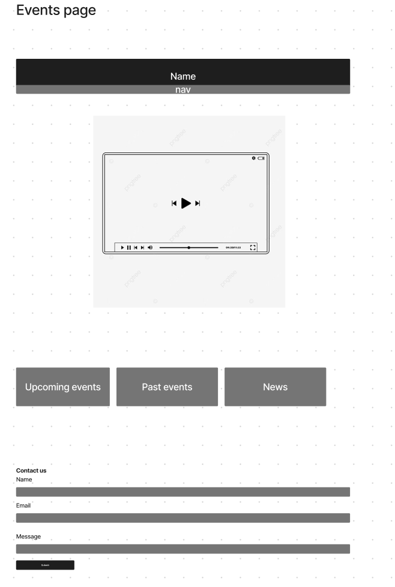

Name: Laura Hani Farouk Melek Barsoum
Magdi Yacoub Foundation
Introduction:
The Magdi Yacoub Foundation website serves as a platform to showcase the organization's humanitarian efforts in providing cardiac care and medical services. The website structure incorporates multi-page navigation to effectively communicate the foundation's mission, projects, and impact.
Inspiration:
Doctors Without Borders website - The clarity of information presentation and emphasis on impact inspired the content structure of the Magdi Yacoub Foundation website.
TED Talks by Dr. Magdi Yacoub - Dr. Yacoub's speeches on global health challenges and solutions provided inspiration for the website's messaging and call-to-action elements.
Non-profit organization websites - Studying various non-profit websites helped in understanding effective ways to engage visitors and encourage support for charitable causes.
Accessibility:
Semantic HTML: The website utilizes semantic HTML elements to ensure proper structure and assistive technology compatibility.
Alt Text for Images: All images featured on the website include descriptive alt text to provide context for visually impaired users.
Keyboard Navigation: Keyboard navigation support is implemented to enable users to navigate the website easily without relying solely on a mouse.
Usability:
Clear Navigation: The website features clear and intuitive navigation menus, allowing visitors to quickly access different sections and information.
Consistent Design: A consistent design language, including color schemes, typography, and layout, is maintained across all pages for a cohesive user experience.
Responsive Design: The website is optimized for various devices and screen sizes, ensuring seamless user interaction and readability on desktops, tablets, and smartphones.
Learning:
CSS Flexbox: Learning how to utilize CSS Flexbox facilitated the creation of flexible and responsive page layouts, improving the overall website design.
Media Queries: Understanding and implementing media queries enabled the adaptation of styling based on different screen sizes and device orientations.
Accessibility Best Practices: Researching and implementing accessibility best practices, such as ARIA landmarks and focus management, enhanced the website's usability for all users.
Evaluation I:
The clear navigation structure and consistent design elements were particularly successful aspects of the website. These features contributed to an engaging user experience and facilitated easy access to relevant information about the foundation's work.
Evaluation II:
To further improve the website, additional emphasis could be placed on interactive elements to enhance user engagement. Incorporating multimedia content, such as videos and interactive infographics, could provide visitors with more immersive experiences and a deeper understanding of the foundation's impact.
Resources:
HTML5 Boilerplate
Font Awesome Icons
Google Fonts
W3Schools and MDN Web Docs for reference
Adobe Photoshop for image editing
Wireframe:


Mock up: